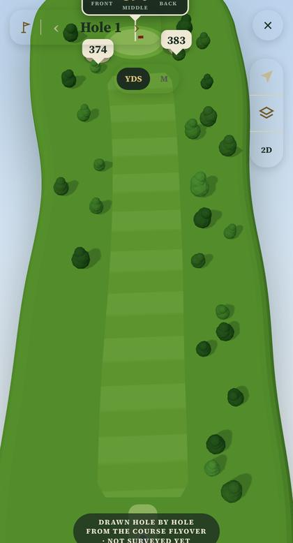
The 1st
Par 4Stroke index 7409 yds · White
A gentle opener. The fairway drifts right, trees down the right the whole way, sand on both sides of the green.
Lakewood Country Club · 3101 Carson Street, Lakewood, California · par 72
What this is. Every hole at Lakewood now stands up in the book the same way Leatherhead does. The shapes were read by hand off the hole-by-hole flyovers — which way each hole bends, how wide the fairway runs, which side the water is on, where the sand sits and how far out — and then built in the book's own renderer. The pictures below are what the book draws, not the flyovers. Not a survey. It is a reading, and the window in the app says so on every hole. If any of it is wrong about the golf course, say which hole and what, and it gets fixed.

Par 4Stroke index 7409 yds · White
A gentle opener. The fairway drifts right, trees down the right the whole way, sand on both sides of the green.
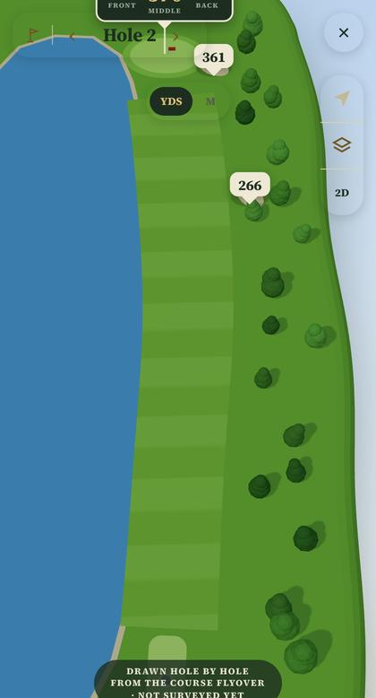
Par 4Stroke index 3389 yds · White
Water the entire left side, tee to green — it never leaves the hole. Trees the whole right. One bunker right of the fairway, one short-right of the green.
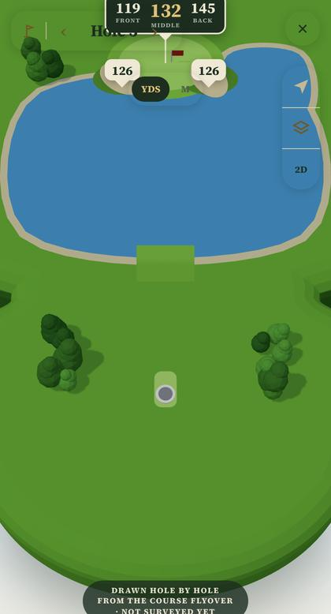
Par 3Stroke index 17139 yds · White
The signature short hole. A lake crosses wall to wall: a full forced carry that starts at the 62 yard marker and runs to the front edge. Raised green beyond it, sand front-left and front-right, trees across the back.
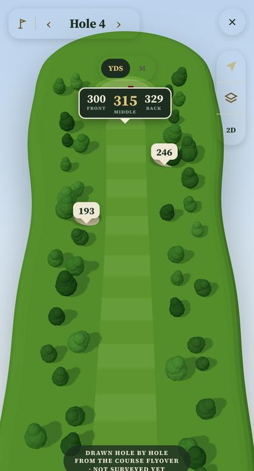
Par 4Stroke index 15330 yds · White
Narrow and straight. Heavy trees down both sides the whole way, no water — the corridor is the entire defence. Sand left and right of the drive, and right of the green.
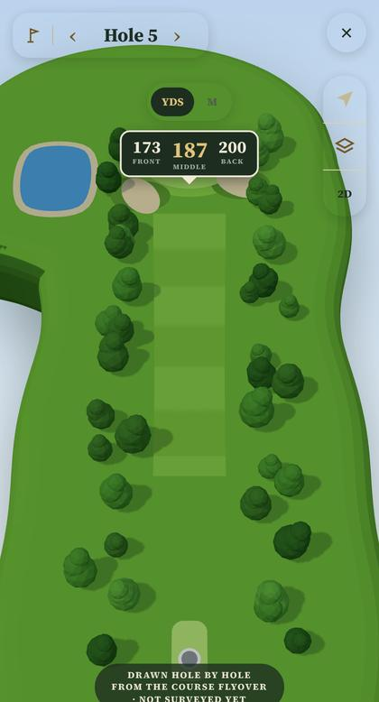
Par 3Stroke index 13196 yds · White
The long par 3, straight down an avenue of trees. Bunker right of the green, another short-left. A pond sits well left and long, off the edge of play.
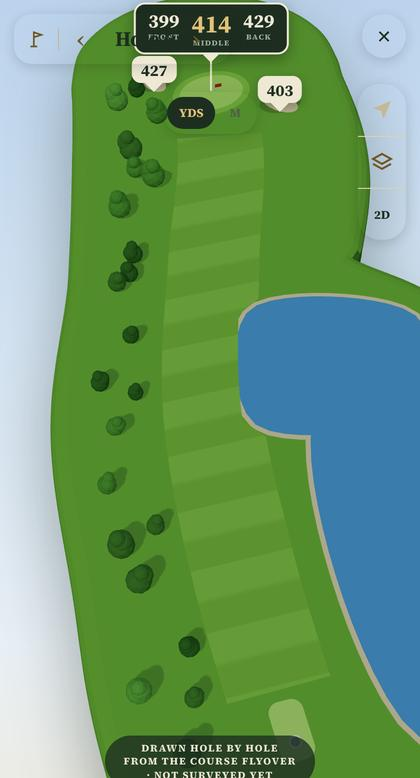
Par 4Stroke index 1437 yds · White
Stroke one. A dogleg right with the creek on the inside of it: water the whole right side, then it cuts hard in at about 40% and pinches the landing area. Big bunker front-right of the green, one back-left. Heavy trees down the entire left.
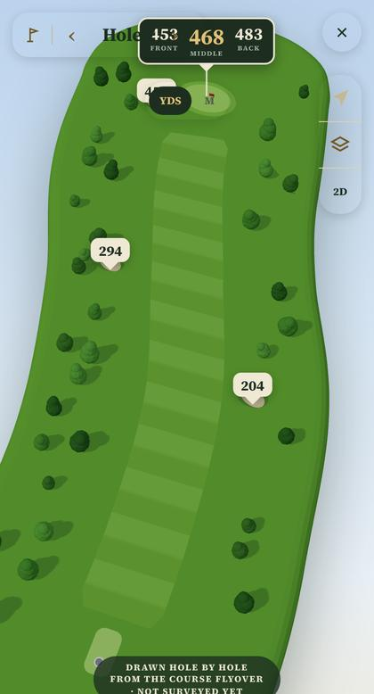
Par 5Stroke index 9494 yds · White
Doglegs left and climbs to a green tucked in the corner. Fairway bunker out right in the driving zone, one at the inside-left corner, one front-left of the green. Dense trees down the left.
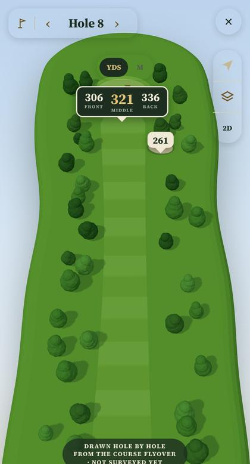
Par 4Stroke index 11337 yds · White
Short, but a wall of trees down the left and a second line right. Straight up the middle. Sand right of the drive, then left and right at the green.
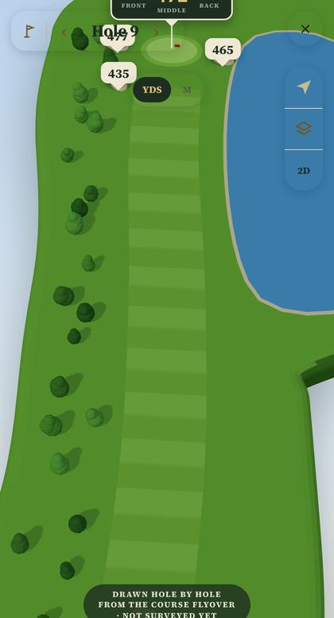
Par 5Stroke index 5495 yds · White
Wide and generous off the tee, waisting in at about halfway. Trees down the entire left. The lake takes the whole right side from mid-hole past the green. Bunkers ring the green.
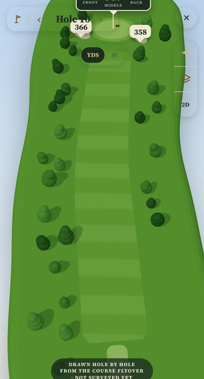
Par 4Stroke index 2388 yds · White
Second hardest. Uphill all the way, bending gently left, to a green on the crest you must thread between a big bunker front-left and one front-right.
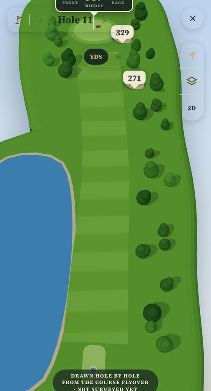
Par 4Stroke index 10356 yds · White
The lake holds the left for the first half of the hole; the fairway bends right away from it. Trees down the right and across the back. Fairway bunker right in the driving zone, one right of the green.
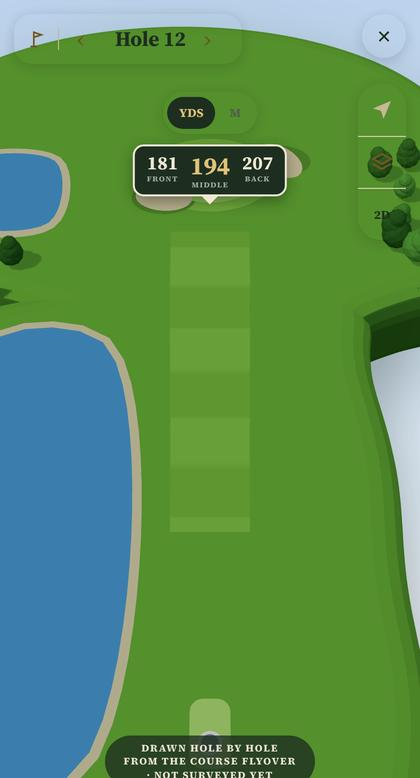
Par 3Stroke index 12203 yds · White
Miss it left and it is wet — water along the whole left, and a second pond up and left beyond the green. Miss it right and it is sand: two bunkers out there. Shallow green, bunker tight front-left.
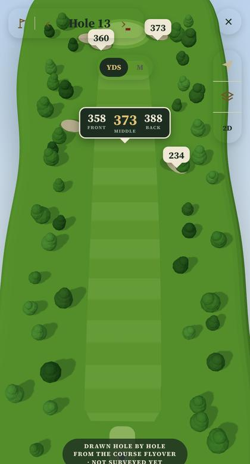
Par 4Stroke index 4391 yds · White
Long, straight and uphill, tree-lined both sides. Sand on both sides of the drive — a big sprawling one right, one left — then two short-left of the green and one right.
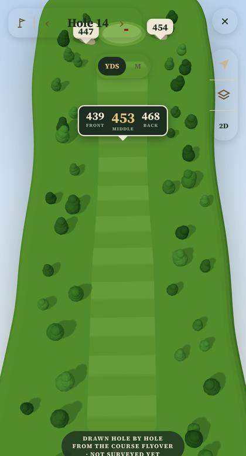
Par 5Stroke index 14476 yds · White
A long avenue of trees, no water, a waist in the middle. Green at the far end with a long bunker short-left and one right.
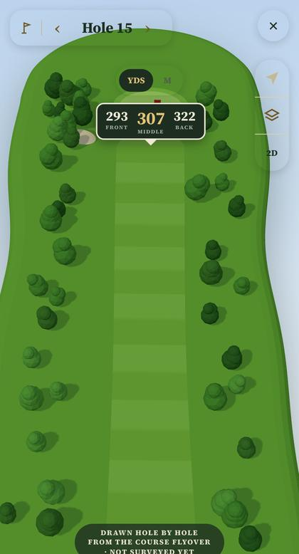
Par 4Stroke index 18323 yds · White
The kindest hole on the card. Short, up a gentle rise, trees both sides and round the back. Three bunkers guard the green: a big one out left, one short-left against the fairway, one right.
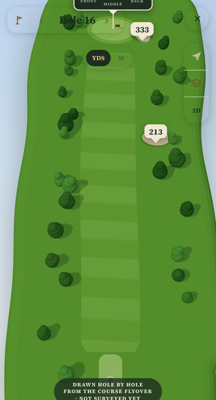
Par 4Stroke index 8356 yds · White
Bends left and climbs. Thick trees down the left, scattered right. One big bunker owns the right of the driving zone — the only real hazard off the tee. Sand right of the green.
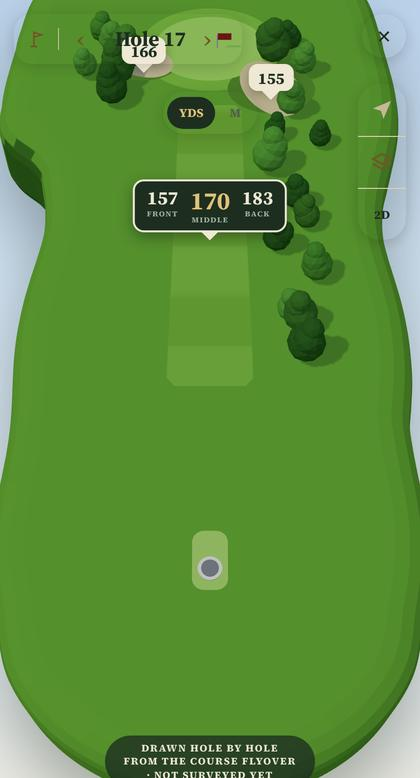
Par 3Stroke index 16178 yds · White
A shelf green with sand out front on both sides: one well out front-left, and a big sprawling one front-right that eats the whole right approach. Trees right and across the back, open to the left.
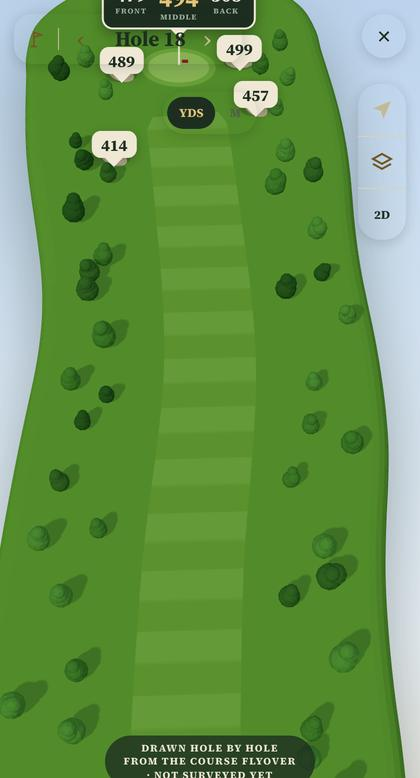
Par 5Stroke index 6519 yds · White
Uphill home. Bends gently right then back left. Trees both sides the whole way, and a pair of bunkers pinching the lay-up — one left, one right. Sand both sides of the green.